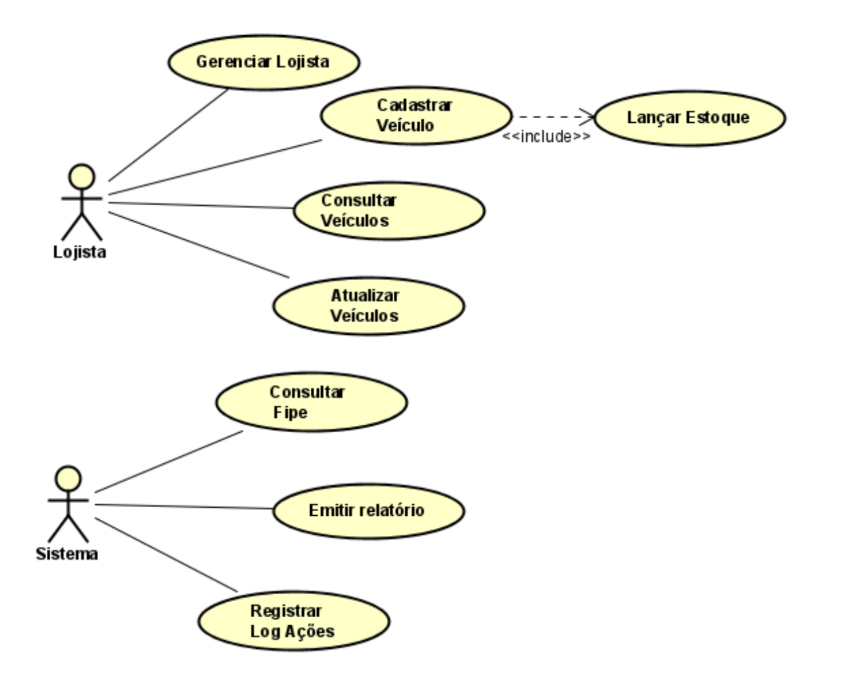
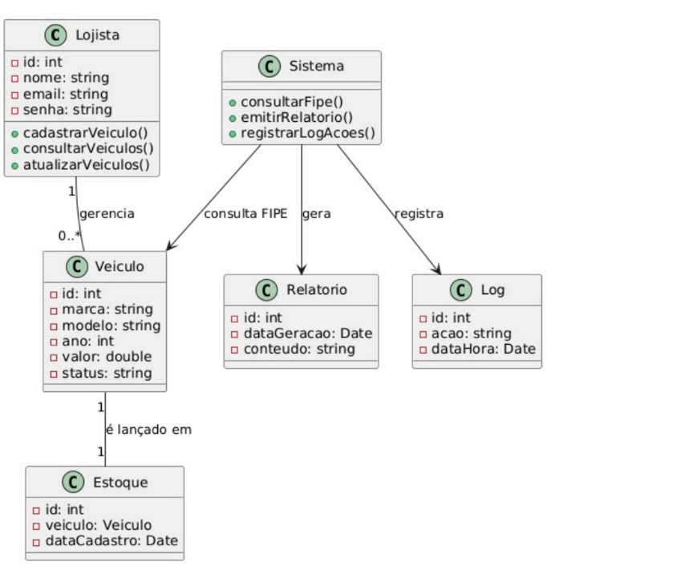
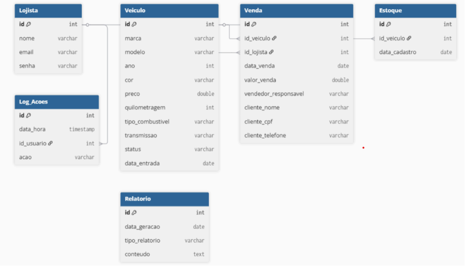
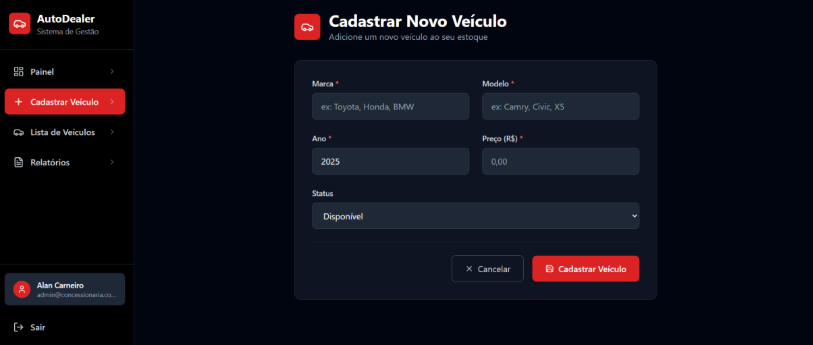

Sistema de gerenciamento de estoque de veículos
O GaragemAPI é um sistema web desenvolvido para a disciplina de Extensão VII, com o objetivo de gerenciar o estoque de veículos de uma garagem de forma simples e eficiente, a aplicação permite cadastrar, listar, buscar, editar, vender e excluir veículos, centralizando as principais operações do controle de estoque em uma única plataforma. O projeto teve início de 2026 e foi desenvolvido de forma incremental, com entregas periódicas envolvendo documentação, levantamento de requisitos, modelagem e implementação das funcionalidades.
Tecnologias utilizadas: C# / ASP.NET Core, Entity Framework Core, SQLite, HTML/CSS/JavaScript, Bootstrap, xUnit (testes de backend), Cypress (testes E2E).
Representa as principais interações do usuário com o sistema.

Estrutura das classes e seus relacionamentos no sistema.

Modelagem do banco de dados utilizado pelo sistema.

Protótipos iniciais das telas do sistema, usados como base para o desenvolvimento.
